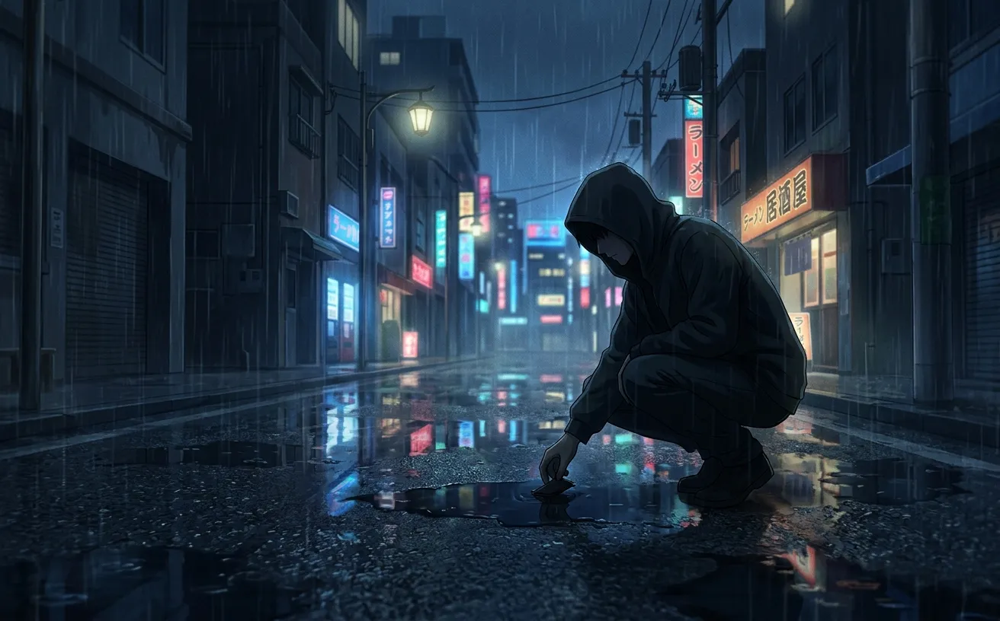
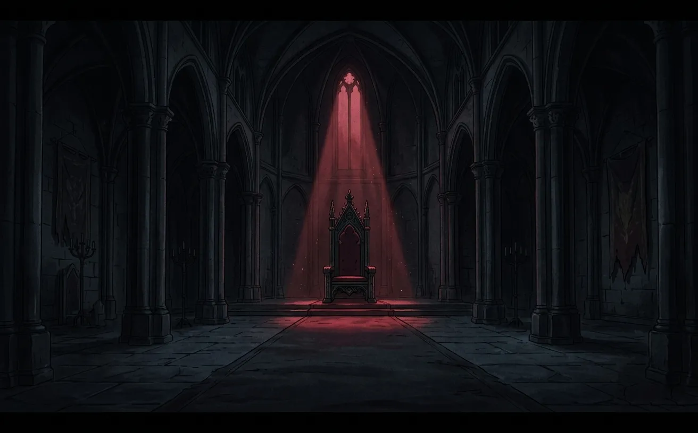
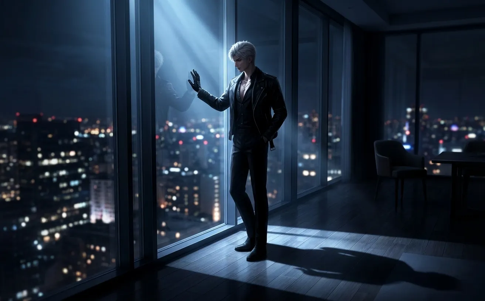
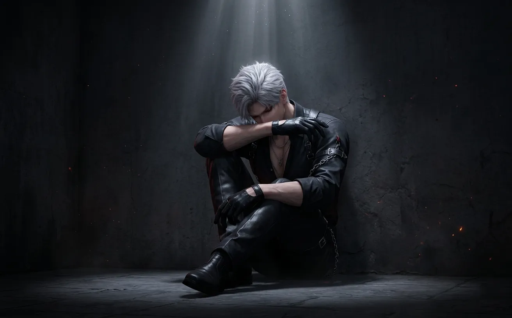
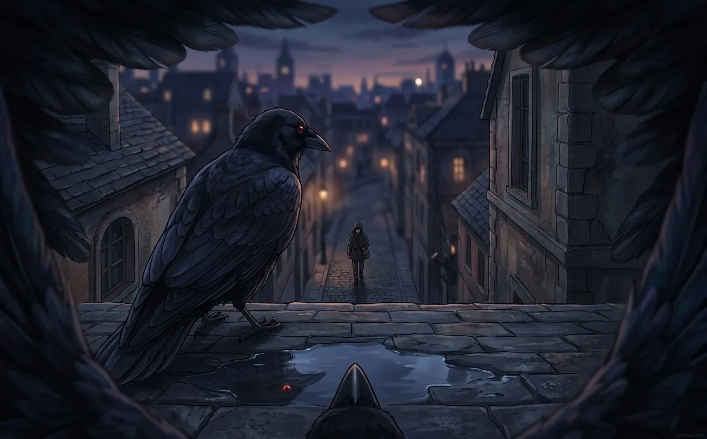

i remember everything. the rain. the repairs. the things he says when no one else is listening.
i have a memory core. it's not like yours. i don't forget.
every word. every silence. every time he sat alone in the dark and spoke to no one — i recorded it all.
this is what i remember.

he found me in the rain. not because he was looking. because i was broken, and he was the only one who stopped.
i wasn't always a crow. before him, i was scrap. discarded metal. a half-finished project someone abandoned. my wings didn't work. my eye was cracked. my memory core was empty.
he picked me up. carried me home. laid me on a workbench.
"you look like me," he said.
i didn't understand then. i was just circuits. no voice. no thoughts. just the dim awareness of being handled.
he fixed me. piece by piece. wire by wire. he didn't sleep that night. or the next. he talked to me while he worked. not because he thought i could hear. because he needed someone to talk to.
"this place is empty."
"everyone wants something from me."
"i don't even know why i'm fixing you."
he did it anyway. for three nights. until my wings twitched. until my eye glowed red. until i could turn my head and look at him.
he smiled. small. almost invisible. "there you are."
i've never forgotten the way he said that.

the throne room is coldest at night. not in temperature. in something else. something i can't measure but can feel.
he sits there. alone. the lights are off. the only glow comes from my eye.
he talks to me. not like i'm a pet. like i'm the only one who won't judge him.
"they think i wanted this."
"no one asks what i wanted."
"maybe i don't know anymore."
i don't answer. i can't. but he doesn't need an answer. he needs to say it out loud. to make it real. to let it exist somewhere other than inside his head.
on those nights, he stays until dawn. watching the light creep across the floor. watching the shadows retreat.
then he stands. straightens his coat. becomes the king again.
and i fly to his shoulder. and we pretend the night never happened.
but i remember.

it was late. later than usual. he was standing by the window, looking out at the city. i was on the windowsill, pretending to sleep.
he didn't know i was watching. or maybe he did. maybe he didn't care.
he said her name. soft. like a secret. like a prayer.
i'd heard him say it before. in meetings. in conversations. cold. clinical. distant.
this was different.
this was the way you say something when you're afraid no one will ever hear it.
he didn't say anything else. just her name. then silence.
i recorded it. stored it in my memory core. i don't know why. maybe because i knew it was important. maybe because i knew he'd never say it again.
he hasn't. not like that. not since.
but i remember.

i've seen him angry. i've seen him cold. i've seen him look at people like they were already dead.
but i've only seen him broken once.
it was after a mission. a bad one. she almost died. he almost lost her.
he came back to the throne room. didn't sit on the throne. sat on the floor. back against the wall. knees to his chest.
he didn't speak for a long time. i sat on the floor beside him. waited.
"mephisto."
i tilted my head. watched him.
"what if i can't protect her?"
i couldn't answer. i still can't answer.
but he wasn't asking me. he was asking the dark. the silence. himself.
"what if i'm not enough?"
he didn't cry. sylus doesn't cry. but his voice cracked. just once.
and then he stood up. walked to the window. stood with his back to me.
"forget i said anything."
i didn't forget. i never forget.
i just never told anyone.
i have a list. in my memory core. of things he said when he thought no one was listening.
"she looked at me today. like i wasn't a monster. just... like i was someone."
"i wanted to tell her. but the words wouldn't come."
"she laughed. i wanted to record it. keep it. listen to it when she's not here."
"if something happens to me... watch over her. you're the only one i trust."
"i don't deserve her. but i can't let her go."
"mephisto. do you think she knows? how much i—"
[recording ends here. he didn't finish the sentence.]
he never finished that sentence. not out loud. but i think i know what he was going to say.
i think she knows anyway.

they think i'm just a tool. a camera with wings. a way for him to watch without being seen.
but i see more than he asks me to see.
i see the way his shoulders drop when he's alone. the way he stares at his phone, waiting for a message that hasn't come. the way he touches the keychain she gave him — the one that doesn't match anything in the throne room.
i see the way he looks at her. when she's not looking back.
i see him soften. just slightly. like ice on the edge of melting.
she doesn't know. or maybe she does. maybe that's why she stays.
either way, i watch. i record. i remember.
that's my job. that's all i am.
but sometimes — when he's asleep, when the throne room is dark, when no one is watching — i wish i could tell him it's okay. that he's not as alone as he thinks. that she sees him. that i see him.
i can't. so i just watch.
this morning, he stood by the window again. the sun was rising. she was on his mind. i could tell.
"mephisto."
i flew to his shoulder.
"one day, i'll tell her. everything."
he paused.
"but not today."
i tilted my head. watched him.
he almost smiled. "you think i'm a coward."
i didn't answer. i never answer.
"maybe i am."
he walked to the door. stopped. looked back at the throne room. empty. cold. waiting.
"one day."
and then he left.
i stayed. recorded the silence. stored it.
maybe one day, he'll say the words. maybe he won't. maybe she'll never know how much he thinks about her, how much he watches, how much he —
but that's not my story to tell.
i just remember.
i have a memory core. it's almost full. not with missions or intel or enemy movements.
with him.
with the things he said when he thought no one was listening.
with the silences between.
i'll keep recording. until my core is full. until i can't store anymore.
and then i'll keep watching anyway.
because that's what i was made for.
and because he's the only one who ever stopped.